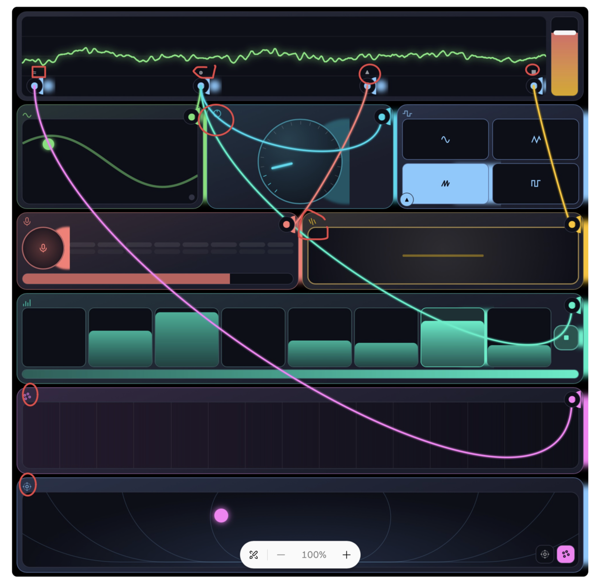

1.
Create a spatial music synthesis mobile web app optimized for iPhone hardware architecture. The sound sources should be built off of a reasonable selection of sensor primitives (see reference 1.1). After 4–7 have been selected, each should have a unique, interesting UI control. Match each source type to its audio analog, such as LFO, filters, etc. Then, create a plan of how all sources relate to each other to package as a full synthesizing instrument. Think about how each source can map into different primitive waves.
The whole web app UI should be a fixed page with no scrolling. Each sound source should have its own touch parameter control with unique ways to control the sound, taking full advantage of haptic feedback to give the app a sense of real hardware. Some examples are: dial scroll wheel with “clicks,” toggle buttons, touch pads and sliders, multi-touch pad, and other buttons that can be found on synthesizers. There should be an oscilloscope view to show the master sound, with a volume slider control. Minimal wording on the page except when absolutely needed. The vibe of the app should resemble simple, colorful, but maximized aesthetic to promote experimentation. Similarly to a modular synthesizer, digital patch cables should be used to connect different sources to each other. One module must include post-audio spatial output. This should be a touchpad that changes the spatial location of a particular sound source, or the master sound source.
The user experience should be for anyone to pick up and use instantly, without even knowing how to use it. The web app should be accessible to all knowledge levels.
Reference
1.1: iPhone sensor primitives with web API
Accelerometer and gyroscope (permission tap, 60 Hz)
Orientation and compass heading (permission tap)
GPS: latitude, longitude, altitude, speed, heading
(permission)
Front and rear camera, one at a time (permission)
Microphone (permission)
Speech recognition (permission)
Speech synthesis
Web Audio and AudioWorklet, stereo output
Multitouch, 5 points, with radius and angle
Screen size and pixel ratio
Refresh rate (measured, not reported)
Color gamut and HDR media queries
Visual viewport and pinch scale
Fullscreen (video only)
Online or offline event
Speaker and Bluetooth audio via the OS route
Haptic tick (iOS 18, switch control only)
Lock screen media controls (Media Session)
Push notifications and badge (home screen apps only)
Screen wake lock
CPU core count (may be clamped)
Storage quota
Dark mode and reduced motion queries
Locale, time zone, clocks at 1 ms resolution
Page visibility and app switch events
Face ID and Touch ID through passkeys (yes or no only)
Contacts picker
Files and photo library picker
Clipboard (gesture required)
WebGL 2
WebGPU (iOS 26)
WebAssembly with SIMD and threads
Web Workers and Service Worker
WebRTC and WebSocket
2.
The patch cable logic doesn't correctly attach to different modules. In addition, use the primitives to add a melodic/bass sequencer
3. (annotation)
Some of the icons are not intuitive. I want the style to be such that each module has its own distinct style.
